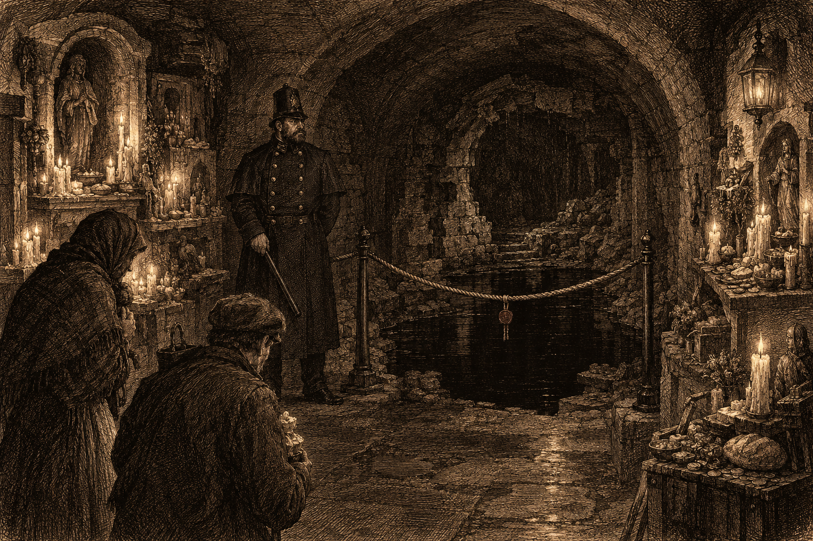
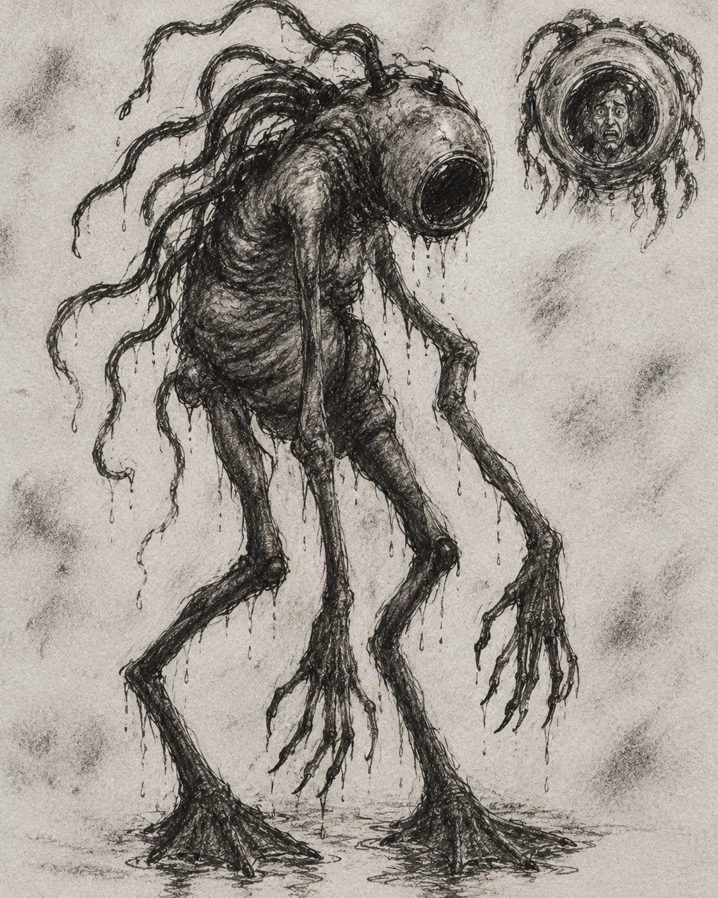

The black water in the Cold Corner shrine, as near as the Wardens would let us come.
Every docker in Doskvol knows the saying: don’t whistle on black water. I have heard it all my life and never once asked why. This week four people are dead in a shrine beneath the Cold Corner, and I have stopped laughing at it.
The shrine sits below the docks, down a stair most of the city has never noticed: a room of small altars, candle stubs and offerings, kept by working people who pray to things the Church does not name. By the time I got there the Spirit Wardens had been and gone. The far alcove is roped off, a Warden’s seal hangs from the rope, and a Bluecoat stands beside it to see that nobody crosses. I was allowed as far as the rope and no further.
From there I could see it: a collapsed alcove, and on its floor a puddle of perfectly still black water, no more than three or four inches deep. It does not ripple. It does not take the lamplight quite as water should. I did not whistle.
What happened there I have pieced together from the regulars, who did not want to talk, and from a round of drinks, which helped. A party of strangers came down that afternoon, which is rare enough. One of them, a well-dressed gentleman, saw a beggar about to offer his last crust at the altar and pressed a gold coin into his hand instead. The beggar ran. The gentleman then laid two coins on the central shrine, as though he was not sure of the price. The very large man beside him only looked at him, and said, to no one in particular, “Yeah, the water is weird today.”
The strangers then stood around the black puddle for a long while. At last a smaller man among them lost patience, stepped in, and whistled. And he began to sink. Into four inches of water.
Down past his ankles, his knees, his waist, while a very large man hauled on his arm and could not shift him. Then a second stranger walked in beside him and whistled too. One by one they went under, every one of them. The gentleman went last. Two of the faithful, I am told, went in after them, whistling. Over the next hour four bodies came floating up out of that puddle: two men nobody knew, and then the two who had followed.
The saying is older than any of the men who taught it to me. Ask on the docks where it comes from and you will hear about the Constance Grey, a leviathan hunter that lay at anchor in the bay one calm night, years back. Her captain was a young lord, fonder of his lace than of his crew, who thought the dockers’ superstitions very amusing. The water that night was flat and black as glass. He stood at the rail and whistled a dance tune at it, to show the old hands what he thought of them. The bosun begged him to stop. He whistled louder.
In the morning the Constance Grey was gone. No wreck, no oil on the water, no bodies, not one plank. Where she had lain there was only still black water.
Tam Fennick, whom readers may remember from these pages, put it plainly. “Whistling’s calling. You whistle for a dog. You whistle for a cab. Why would you whistle on the water? You don’t want what answers.”
What lies beyond that water, nobody can tell me. One regular swears there is a temple down there, older than the city. Another says there is nothing at all, only down. The Wardens are not saying. And on the docks, the saying has not changed. Don’t whistle on black water. And don’t go in after those who do.
Doskvol has its ghosts, its demons and its eels. It now, it seems, has the Brass-Heads. Last week no fewer than nine residents of the canal lanes reported tall, shambling things lurching through the dark: man-shaped, more or less, but with great swollen domes for heads, smooth and gleaming like a beetle’s back.
Most heard them before they saw them: the heavy, wet thwack of a footfall, then a squelch, then another, as though something were walking in boots full of water. “Like a man who’s forgotten how knees work,” said one lamplighter.
A cooper on his way home saw one from behind, standing under a lamp, and called out to it. It turned toward him slowly, its whole body at once. It had no face. Where a face should have been, he saw only his own, staring back at him out of the dome. “It took my face,” he told me, still pale two days later. “It was wearing my face.” He screamed and ran, and has checked his mirror several times an hour since.
Another witness watched one of the creatures seize its own great head in both hands and try, violently, to tear it off, wheezing and hissing all the while like a thing possessed. It did not succeed.
Theories abound: demons, the drowned come up for air, things from far beyond the Deathlands. But there is a great deal we do not know about the waters of Doskvol. Is this the newest horror to crawl up from their depths? One witness insists the larger creature carried a third, smaller one under its arm, limp, like its young. Another says it was also carrying a stool. A barkeep holds that there were two of them, and that they were arguing. I think this unlikely.
My advice: keep to lit streets, bar your door, and if you hear something squelching in the dark, do not stop to ask it what it wants.

The Brass-Head, as drawn by our artist from the accounts of witnesses.